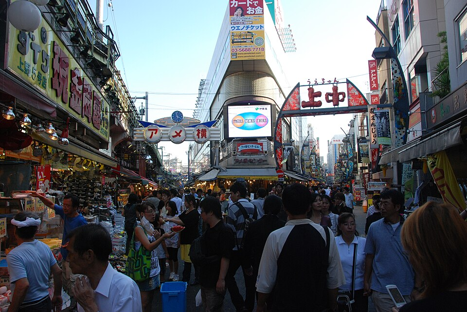
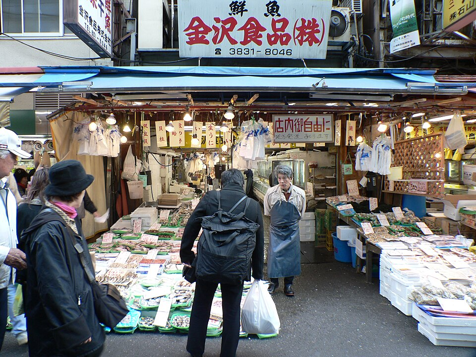
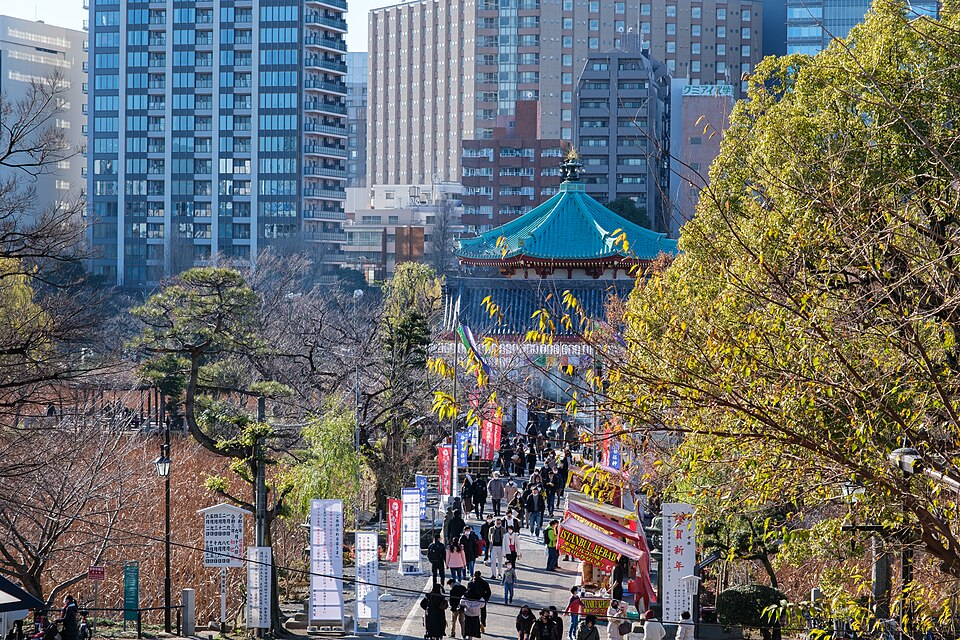
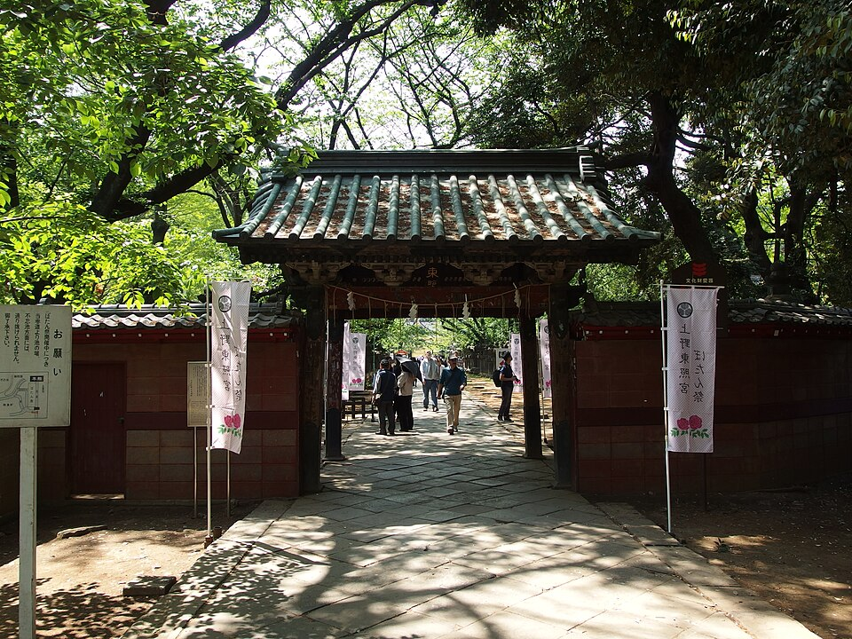
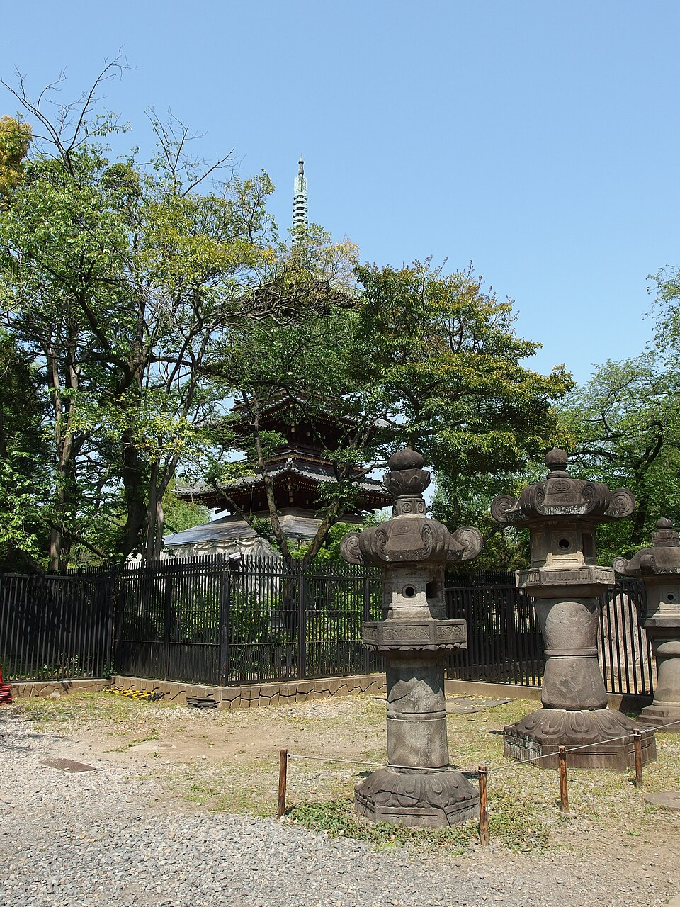

Открытый рынок вдоль путей линии Yamanote от станции Ueno на юг: рыба, фрукты, сладости, уличная еда, одежда. Название - от «лавок сладостей» послевоенных лет, когда сахара не хватало, или от «Америки»: здесь продавали излишки американской армии. Хорош для перекуса на ходу.
Открыт в 1873 году на землях бывшего храма Kan'ei-ji, один из первых общественных парков Японии и самый посещаемый городской парк страны (больше 10 млн в год). Храм Kan'ei-ji построили сёгуны Tokugawa, чтобы охранять замок Edo с северо-востока - «несчастливого» направления; храм разрушен в войне Boshin 1868 года.
Основано в 1627, перестроено в 1651 году сёгуном Tokugawa Iemitsu и с тех пор почти не менялось - образец архитектуры эпохи Edo. Здесь почитают Tokugawa Ieyasu. Октябрь-февраль 9:00-16:30, вход на территорию бесплатный, к самому святилищу за оградой 700 ¥ (9:30-16:00). Официальный сайт.
Природный пруд (его много раз перестраивали и даже осушали), на острове - восьмиугольный храм Bentendo. Летом пруд в лотосах.
Tokyo National Museum и National Museum of Western Art (здание Le Corbusier, объект ЮНЕСКО) закрыты во вторник 13.10: после праздничного понедельника у них выходной (официальные сайты). Открыты со среды 14.10 - вариант на утро перед выездом.
.jpg){kind=link}

.jpg){kind=link}
.jpg){kind=link}
.jpg){kind=link}